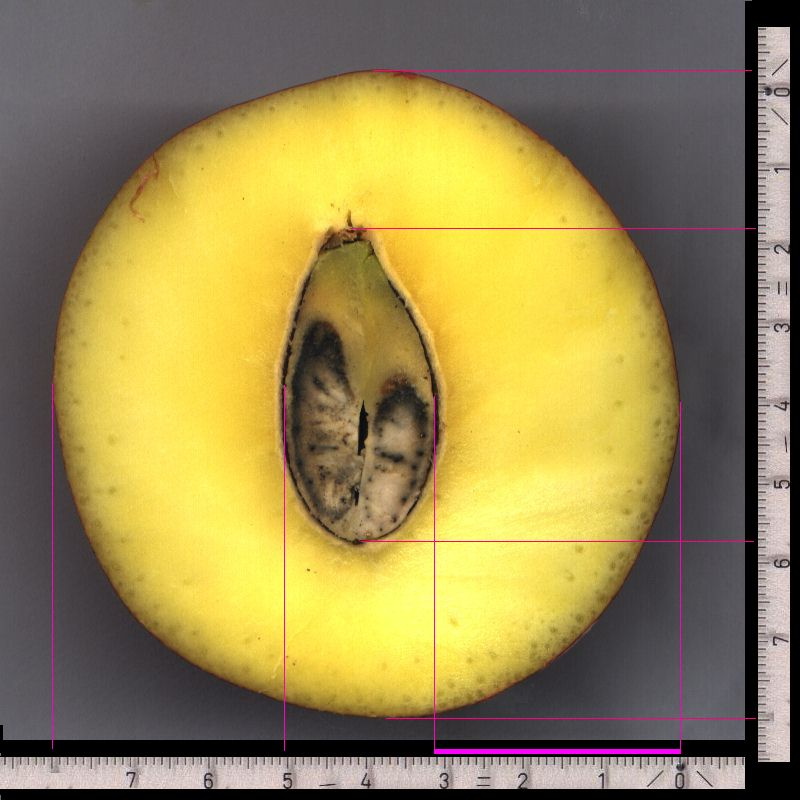
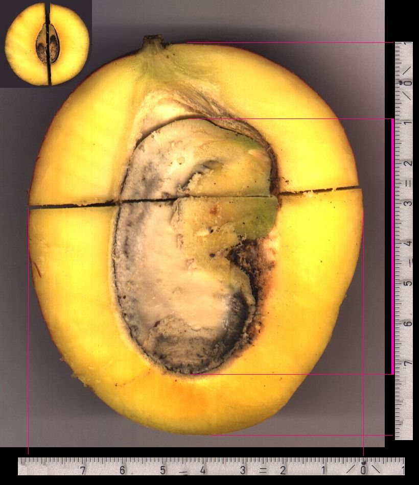
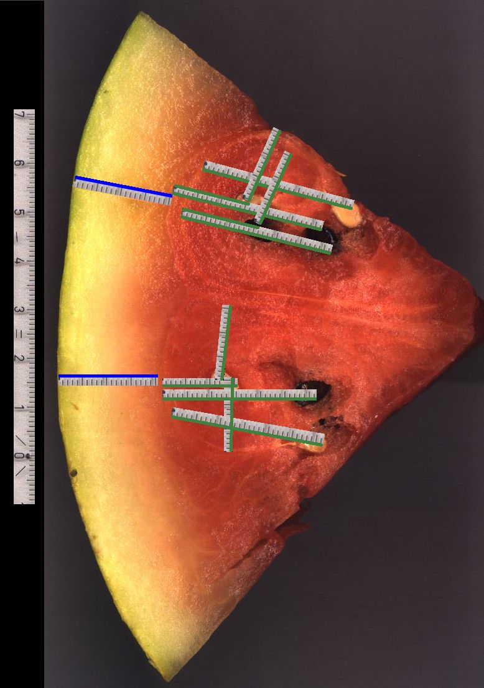
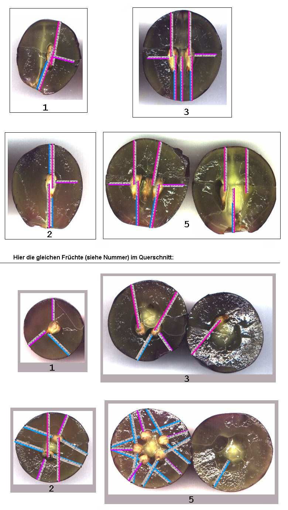
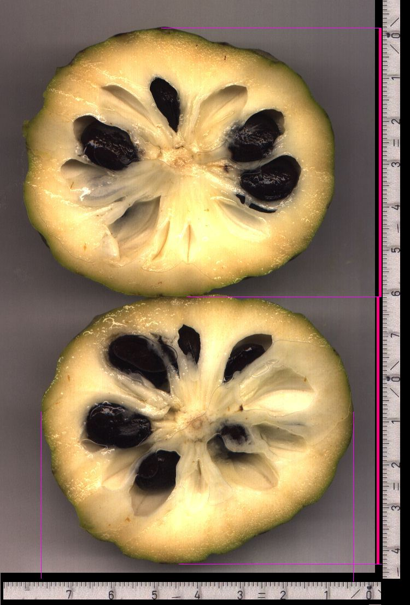
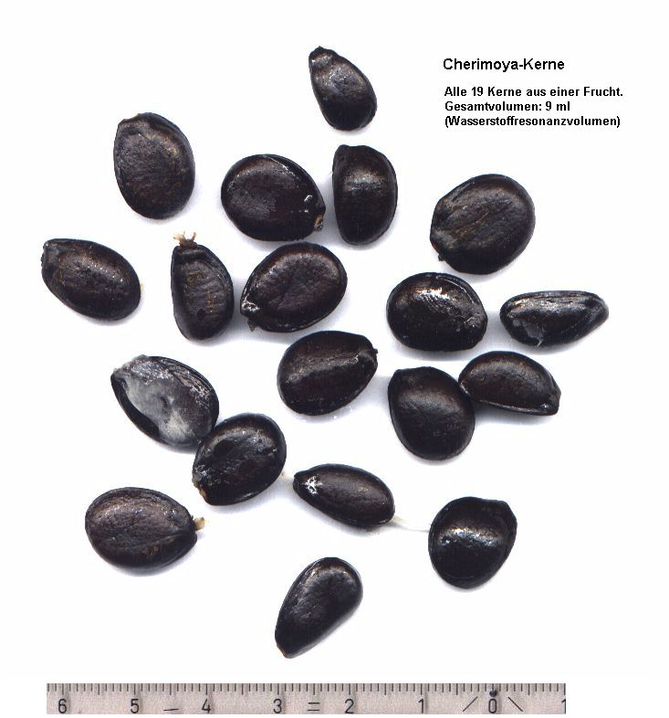
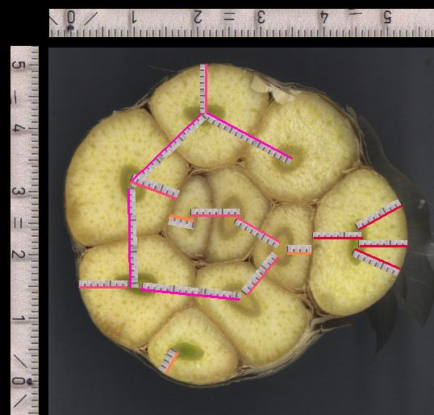
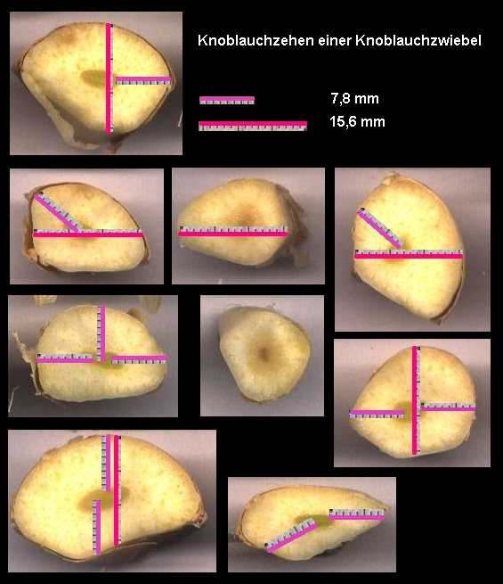
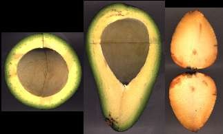

|
|||
|
|||
|
MangoHier ist eine Mango-Frucht, die an ihrer dicksten Stelle eine Kante des inneren weichen Kerns auf Bruchteile des Millimeters genau nach C-Resonanz ausgerichtet hat:  Bild ohne Eintragungen Damit fängt sie die Energie für den Kernschalenbereich ein. Alle anderen C-Wellen, die von der Fruchtoberfläche kommen, treffen in den Kern hinein. Es gibt in der Frucht keinerlei Verluste, also C-Wellen von der Oberfläche, die den Kern nicht erreichen.
 Bild ohne Eintragungen
WassermeloneWassermelone im Querschnitt. Der Grund für den Unterschied zwischen (kleinen) gelben und (großen) schwarzen Kernen ist mir noch nicht bekannt. Es sieht aus, als ob sie verschiedene Feldlinien vertreten (E oder H).  Bild ohne Eintragungen Zur anderen Wassermelone (Querschnitt im Ganzen) Nur im Querschnitt sieht man diese kreisenden Strukturen, die die gelbe Schale vom roten Fruchtfleisch trennen. Die Resonanz beginnt erst an dieser Übergangsstelle (Abstand ist wasserresonant). Das ist bei Zitrusfrüchten sehr klar zu trennen, hier wenig sichtbar, bei Tomaten und Weintrauben und ihren Kernen ist es ebenso, nur sieht man dort den Übergang noch schlechter: Tomate
Weintrauben Bild ohne Eintragungen und weitere CherimoyaHier ist noch eine ganz verrckte Frucht. Sie hat so groe Kerne, da die Kerne immer getroffen werden. Sie hat deshalb auch sehr viele Kerne. Die unten im Bild gezeigten 19 Kerne sind alle aus der Frucht von oben, und sie sind so kantig (Tetraeder) wie die Oberflche der Frucht von auen. Wer hat hier wen geformt ? 
 Diese Kerne sind direkt aus der Frucht herausgenommen. Sie sind alles andere als getrocknet. Trotzdem hat ihre Volumensumme Wasserstoffresonanz. Bildet man den Mittelwert pro Stück: 9ml / 19 = 0,474 ml. Sie haben zwar alle eine andere Größe, aber dieser Mittelwert liegt sehr nahe an einem Kohlenstoffresonanzvolumen 0,477 ml = (31,26mm)^3 / 2^6 . Der kleinere Radius der Frucht liegt um 31,26mm . Knoblauchein gaaanz anderes System:  Bild ohne Eintragungen und senkrechter Schnitt  Bild mit und ohne Eintragungen
Avocado
|
|||
|
Fortsetzung mit Apfel,
Birne, Bohne, Sternfrucht Meine Email-Adresse: info@aladin24.de |
|||